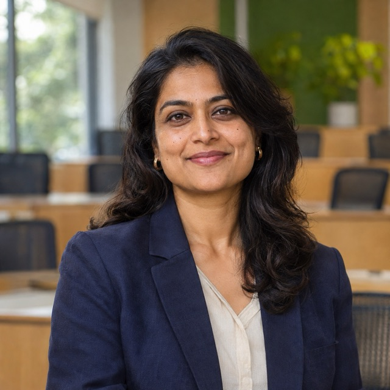
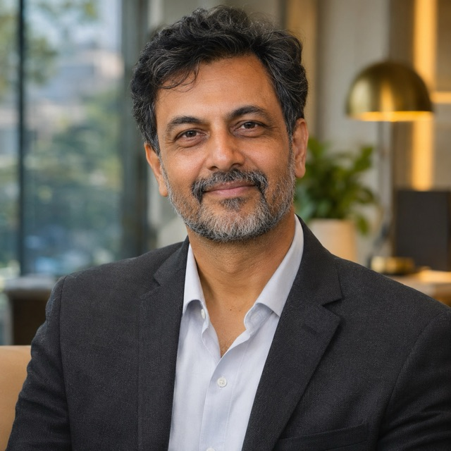
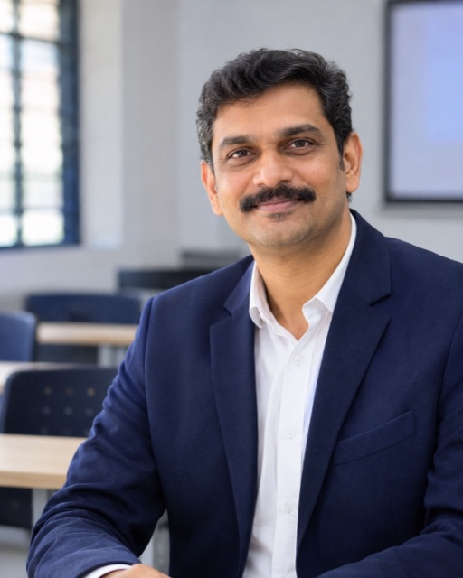
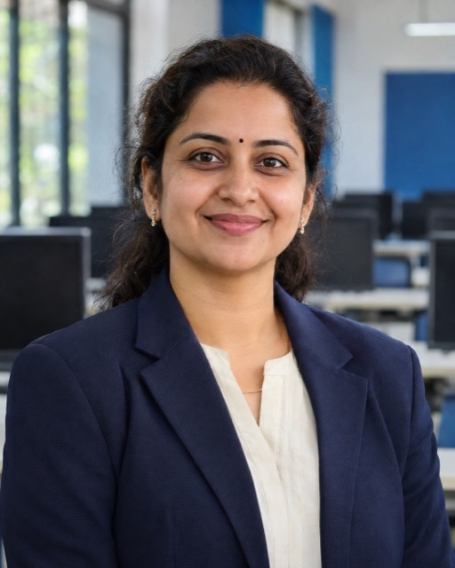
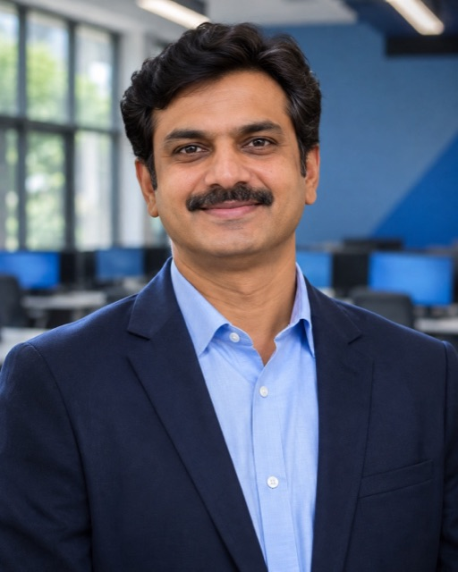

Sample profileStrategy
Faculty & industry voices · MBA + MCA
Across management and computer applications, strong teaching connects the foundations to the questions students will meet in the world of work.
Design preview: names, qualifications and portraits are illustrative sample profiles, not a confirmed LEAD faculty directory. Replace with approved profiles before publication.
Sample faculty and practitioner profiles across strategy, finance and entrepreneurship.

Sample profileStrategy

Sample profileFinance
 Sample profile
Sample profileEntrepreneurship
 Sample profile
Sample profileMarketing
Sample voices bring computing fundamentals into conversation with products, data and the way technology is built.

AI-generated sampleComputer Science
 Sample profile
Sample profileProduct & Technology

AI-generated sampleComputer Science

AI-generated sampleSoftware Systems
The learning experience
Faculty, researchers and industry voices help students move between understanding a subject and using it with confidence.
Make the key ideas clear, connected and ready to question.
Use cases and practitioner insight to understand how decisions happen.
Carry the ideas into projects, discussion and collaborative work.
Explore the programmes